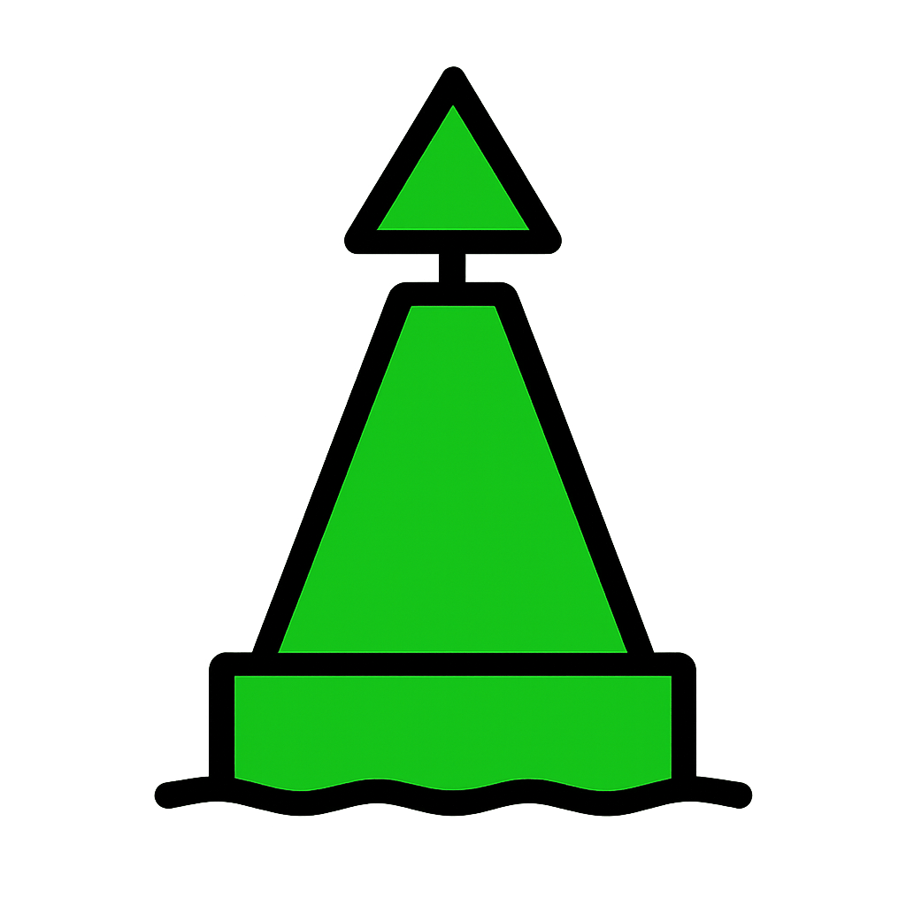

Kapal (Vessel)

Semua tipe kapal digambarkan sebagai segitiga biru yang berputar sesuai heading-nya.
Warna garis luar berubah mengikuti *Navigation Status*.
Warna garis luar berubah mengikuti *Navigation Status*.
Navigation Status
Under way
At anchor / Moored
Not under command
Fishing / Sailing
Cardinal Marks

North Cardinal1
East Cardinal2

South Cardinal3
West Cardinal4
Lateral Marks

Port Hand5

Starboard Hand6
Safe Water & Special Marks

Safe Water10

Special Purpose11

Isolated Danger9
Lain-lain

Emergency Wreck17

Virtual ATON20

Fixed Structure15

Floating Structure16